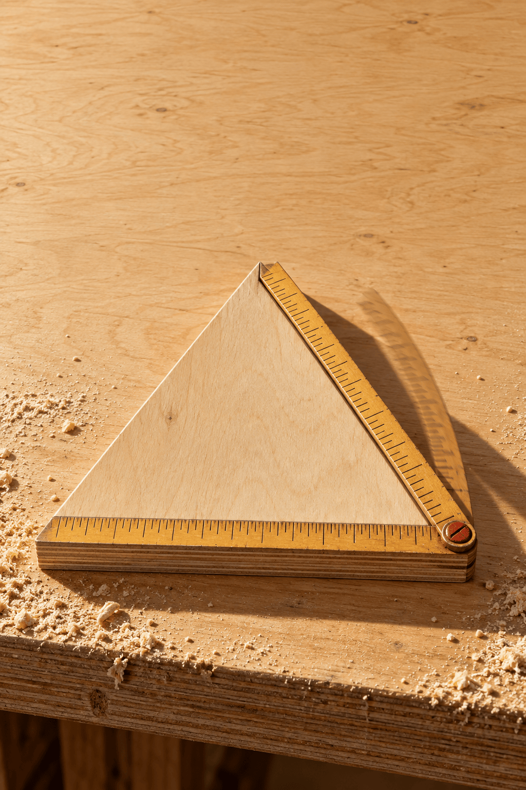

90초
0 /10
0
0
연습 · 시계는 쉬고 있어요
같은 변에 자를 옮겨 대요
한 꼭짓점에서 다른 꼭짓점까지 끌어 보세요.
90초 안에 10개 · 기회 3번

수학 목공실 / 04
자를벌려
같은 변에 옮겨 대라
4학년 2학기 · 삼각형
오늘의 작업 기록
근무 끝
0 /10
0번
다음에는 한 번 더
같은 변에 옮겨 대요
① 꼭짓점에서 꼭짓점으로 끌어 자를 잠가요.
② 자 끝의 동그라미를 잡고 다른 변으로 돌려요.
③ 조건에 맞지 않는 삼각형은 통으로 밀어요.
삼각자는 동그라미를 꼭짓점에 놓고, 팔 끝을 끌어 한 변에 맞춰요. 예각삼각형은 세 각을 모두 재요.
기회 3번 · 90초 안에 10개.
자 풀기는 기회를 쓰지 않아요.